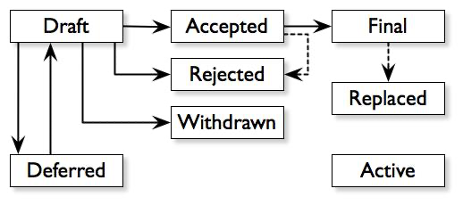

比特幣研究：尋找中本聰系列【九】——設立比特幣獎和中本聰獎
已更新：2022年12月8日
特邀作者：祝維沙，知名華人企業家

9.1 比特幣獎
9.1.1 獎勵社區志願者
中本聰相信自然進化，他的離開導致了社區管理時代的開始。過去的改進都是中本聰裁決，其實矛盾很大。有些人達不到目的的會有污言穢語出口，中本聰生性謙虛禮貌，也沒有接受投資，不需要對股東負責，還是過與世無爭的日子舒坦。他這一走並不能解決混亂的問題，皇上死了，江山還要繼續。如何繼續？9個月後一個偉大的事件出現了，印度裔英國程序員阿米爾塔基（Amir Taaki）在2011年9月發布了比特幣社區的第一個提案：比特幣改進提案BIP 001。它描述了什麼是比特幣改進提案。盧克達希（Luke Dash）是在2011年1月加入比特幣社區的老成員，他提出BIP-002提案，修改了BIP的準則並取代了BIP-001。兩者都是社區改進比特幣程序的提案規則。下圖是比特幣社區提案的大致流程。開創了社區自治的歷程，一直延續至今。這是人類歷史的一大步。人類需要信任，不是相信一個獨裁者，而是相信一個自治的機制。

這裡有一個問題，早年的開發者可以從挖礦中賺錢，客服可以不賺錢，志願地為項目做貢獻。但是當挖礦專業化之後，開發者依然是沒有激勵的，如果早期沒有留下幣，相信也沒有留在比特幣社區的必要了。大量的後期開發者會從礦機圈產生，他們養得起開發人員。這種可能性是存在的。圖景是最終的天平會向算力傾斜。開發者和算力的製衡就會打破，從而破壞了比特幣的價值存儲。這是十分令人不安的問題。解決這個問題還是中本聰的辦法，給開發人員的物質和精神激勵。
諾貝爾獎和圖靈獎都是獎精英的，世界不缺這種類似的獎。世界缺什麼獎？比特幣缺什麼獎？比特幣缺對志願者的獎勵。比特幣的設計之初缺了一環，沒有基金會，也沒有從手續費中拿收入來維護比特幣系統。將手續費全部分給礦工是不公平的。公平的原則是按勞取酬。編寫代碼也是勞動應該獲得獎勵，就如同提供算力獲獎一樣。憑什麼寫代碼的就是志願者？寫代碼的獲獎者就如同算力的博弈，社區的評議也是一種博弈。以太坊基金會從交易費中分得收入，這點很聰明。從競爭的角度，比特幣也應該有。整個手續費的比例不超過以太坊就好。
比特幣對早期的激勵非常大，也許中本聰希望早期的參與者一直能維護下去。2009年參與的程序員很少，而後參加的人包括相對早期參加的，如第二任首席維護員加文安德烈森等，對於社區早期討論並不太清楚，他們只是程序高手，不是中本聰，不是哈爾芬尼，不可能有中本聰等創始群體經過早期的信仰熏陶，對比特幣的認識不足，哪裡能長期拿住比特幣？一高漲就賣了。普通人沒有了幣沒有了利益也就沒有積極參與的動力。後來參與者的勞動如果不能積極評價，只靠自願就不會有長期參與的動力，弱化了中本聰三位一體的設計初衷。
比特幣獎就是對志願者的肯定和精神鼓勵。志願者貢獻的不一定只有代碼，社區有活躍者，對積極參與者的正向激勵是補上比特幣早期的缺陷的辦法。當競爭對手是有組織的，散兵游勇如何是對手？比特幣宣揚的觀點，權力無中心，共識不是民主，都是對的。但是有片面性。不能否定民主的作用，要發揮社區的作用。如果社區是利益機制，需要民主機制解決利益問題。
有這樣一件事。當奧本聰（Craig）要求在刪除Bitcoin.org上中本聰比特幣白皮書時，比特幣首席維護員弗拉基米爾范德蘭曾經迅速回應Craig，並且刪除BitcoinCore.org上的比特幣白皮書鏈接，因此受到廣泛的批評。他表示要退出在比特幣核心開發組擔任的職務，以便進一步去中心化。其實這是一個社區決策問題，他本人隨意地刪除確實有權限過大的問題。他們是程序員，對法律問題的判斷有知識障礙。如果社區更積極一些，這樣的事情不會發生。
9.1.2 比特幣社區改進提案
解決這類問題同樣要有類似比特幣改進提案（BIP）的標準化提案方法，使得擁有比特幣的人都有提案權，如果量一大就要審核，審核涉及很多專業，遠不是編程序那麼單純。所以必須有費用。
誰有權審核，採納什麼意見，應該由社區規定。不妨叫做比特幣社區改進提案（The Bitcoin Community Improvement Proposal，BCIP）。比特幣是三位一體的結構，在利益貢獻上持幣者的貢獻最大，但是發言權最小。在程序方向上決策非常需要專業知識，普通人無法判斷，用投票方式是不對的。但是涉及社區成員利益，相信民主決策更科學。如果有民主決策和討論機制，相信就不會出現弗拉基米爾范德蘭誤刪白皮書的情況。在生態社區治理上比特幣是落後的，不如以太坊等後來的項目。對於生態社區以太坊是有激勵的，因此以太坊生態比比特幣好。我們沒有見到比特幣對生態社區的激勵。落後是逐漸發生的。同等環境下黃金脫穎而出。競爭環境不同，比特幣對黃金就是降維打擊，其實黃金是無法承受的。黃金的地位目前看還行，未來就不好說了。同樣比特幣也面臨競爭問題。現在還行，未來就不好說了。如果要組織基金會，應該由社區投票批准，有開發人員代表，礦機代表和持幣者代表組成，主要解決利益分配的問題。這個利益分配的古老原則是乾活的和出錢的各佔一半，從比特幣來看，開發人員佔26%，礦機佔25%，持幣者佔49%似乎比較合理。
這個方法是否可行？如果交易費部分給了基金會，比特幣核心開發組會會擔心礦工不下載新版，最好的辦法是再有一個利好礦工的改進，將此不利礦工的功能捆綁出去。應該毫無問題。
我的設想很簡單，將比特幣的小數點向右移動5位到6位，哪個礦工敢不下載？而比特幣將瞬間暴漲，因為比特幣的共識隊伍迅速擴大。比特幣項目技術已經十分穩定，因此持幣者的意見變得最重要，因為他們代表共識絕大部分，上市公司還知道聽取小股東的意見，可惜的是區塊鏈的所有項目都沒有意識到這一點，更不要說怎麼玩了。這是未來區塊鏈的用戶社區激勵要解決的問題。用戶社區不同於生態社區，我在無鏈系統白皮書第三章社區治理和間接激勵回答了用戶社區激勵的問題（1）。
9.2中本聰獎鼓勵探險者
有了交易費收入，就有了設獎可能。最該獎的人就是像中本聰這樣，做了有利全社會進步的創新，擔心受迫害而匿名。這種迫害要有人發聲，要有人抗爭，要有社會影響力。比如文件加密軟件PGP公司的創始人菲爾齊默爾曼（Phil Zimmermann）當年的抗爭，差點坐牢。又如電子黃金（E-Gold）的老闆判刑了，對不對？起訴的原因是洗錢，難道法幣不洗錢？
電子黃金項目的境況大致是：
“1996年，電子黃金e-gold作為數字貨幣進入公眾視野。除了適應大眾對便捷性和隱私保護的需求，還因為金本位崩潰後，有些國家政府濫用貨幣發行權引發了惡性通脹，金本位支持者的聲音再次叩響，道格拉斯·傑克遜（Douglas Jackson）就是其中一位堅定的金本位擁護者。1996年，道格拉斯·傑克遜創立了公司e-gold。”
“通過1:1錨定黃金的價格並進行100%黃金儲備，將金本位時代的交易模式電子化。用戶可以將e-gold與法幣兌換，也可以在不同客戶間進行e-gold的直接劃轉，具備支付功能。”
“e-gold不需要通過信用卡、銀行賬戶等煩瑣的手續流程，就能夠快捷、方便、跨地域進行交易，在其成立後很快便得到了迅速成長。2009年，e-gold在165個國家擁有500萬以上個賬戶，擁有超過3.5公噸的黃金儲備，雅虎、亞馬遜等巨頭公司都開通了e-gold支付交易方式，由此可見其當年的影響力。”
“在2000年-2009年這十年間，數字黃金貨幣迎來了它們的“高光時刻”，數字黃金貨幣如雨後春筍般湧現。E-Bullion、E-dinar於2000年創立、GoldMoney、1MDC於2001年創立、Pecunix、Crown Gold、Liberty Reserve於2002年創立。可惜好景不長，2009年，e-gold系統的匿名性為東歐黑客洗錢提供了犯罪基礎，再加上後來平台持續遭遇黑客攻擊，最終因政府施加的壓力導致破產。而其他數字黃金貨幣也步了e-gold的後塵。”（2）
道格拉斯·傑克遜在結束六個月的在家監禁後接受了美國連線雜誌的採訪，以下採訪摘錄：
“這是他自去年承認與洗錢有關的罪行和經營無牌匯款服務以來的第一次深入採訪。他的故事是無數帶著巨大夢想互聯網新秀和企業家的故事之一，只是被清醒的現實所扼殺。但是，他的興衰也為我們提供了一個獨特的視角，讓我們看到了網絡前沿的光輝歲月，以及仍然覆蓋著大部分不受管制和不受保護的網絡蠻荒景象，在那裡，欺詐者與先驅者一起尋找財富，佔據一塊地盤並贏得勝利。”（3）
法官判定道格拉斯沒有明顯的犯罪意圖。其實錨定黃金是一個值得研究的問題。作為數字黃金本位，這是必鬚麵對的問題。區塊鏈穩定幣是在數字貨幣場景錨定了法幣，兩者有多少差別？惡法壓制了多少創新？中本聰顯然受了啟發得到了教訓，比特幣系統一國政府是關不了的（現在的中心化服務也能做到一國政府關不了）。但是抓人還是可以，所以中本聰選擇匿名。記得有這麼一句話：“讓一個老奶奶偷竊，是社會有罪”這就是著名的拉古迪亞拷問。同樣，讓中本聰匿名是社會有罪！設立中本聰獎，就是為了創新而受迫害的人發聲。這個獎和比特幣獎不同，要有歷史考驗，提名資格和程序仿照諾貝爾獎即可。創新的範圍很廣，我們還是回到密碼朋克的宗旨：“主張廣泛使用強密碼學和隱私增強技術作為社會和政治變革的途徑”。（4）後面我們將會描述中本聰的加密經濟學，也就是在加密經濟學這個範圍內比較好。有歷史考驗會減少爭議，比如PGP公司的創始人菲爾齊默爾曼（Phil Zimmermann）對推動加密的普及具有歷史貢獻，應該有獲獎資格。而道格拉斯·傑克遜（Douglas Jackson）是不是應該獲獎，我就吃不准。有爭議就有社區討論，引起社會的廣泛關注也達到目的。
比特幣獎在比特幣持有者中有崇高的榮譽超越金錢本身，是小人物獎，任何人都有得獎的機會，並且是公開透明的社區程序。比特幣已經有大餅節，過節就要有過節的樣子，希望能像奧斯卡晚會一樣有影響力。如果有幾億觀眾的晚會，也是世界一流的利益。社區已經運行了13年有好多志願者都是偉大的貢獻者。這個名單很長很長。
中本聰獎的目的十分明確，由於挑戰法律，引導未來，要十分小心才好。這也是密碼朋克變革世界的初衷。這裡也有長長的名單，儘管他們在商業上失敗了，但是他們是探路者，人類需要諾貝爾獎，獎勵啟迪人類的偉大思想家，也要獎勵死在探險路上的英雄。
中本聰就是一個探路者，探路除了膽大還要武功高強，其高強的武功足以問鼎諾貝爾獎。下一節，我們對中本聰的理論貢獻做一個描述。找到獲諾貝爾獎的理由。
結論：
中本聰：男，時年33-34歲，神童，美國人，住西海岸，是密碼朋克。不缺錢。自由職業者。在過世的中本聰懷疑對像中沒有中本聰。他具有卓越的編程能力和產品設計能力以及對社區的理解力。命好，有一個好金主兼謀士。中本聰對金融有深刻的認識。受奧地利經濟學派影響。哲學上傾向自然進化，喜歡自由自在的生活。
參考文獻
1.Web3.0 Chainless Financial Platform White Paper
Hong Kong Yuxing Technology Company (8005)
2. 數字貨幣30年
靳毅
3. Bullion and Bandits: The Improbable Rise and Fall of E-Gold
Kim Zetter JUN 9, 2009 12:00 AM
4. Cypherpunk